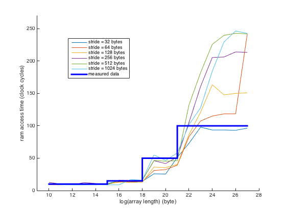
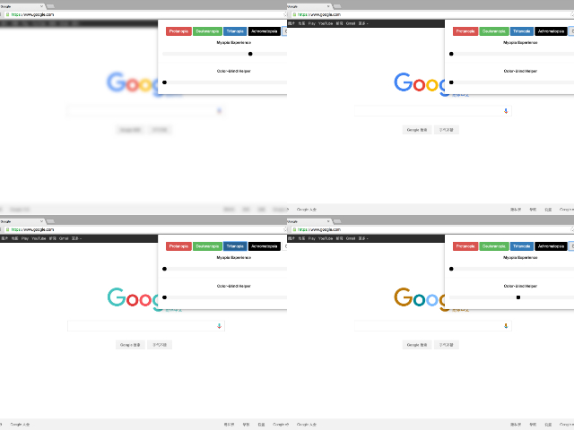
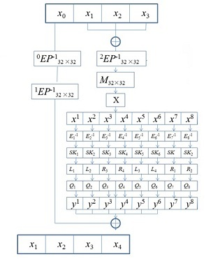
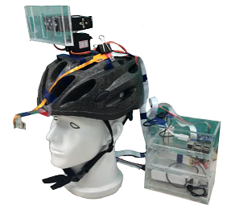
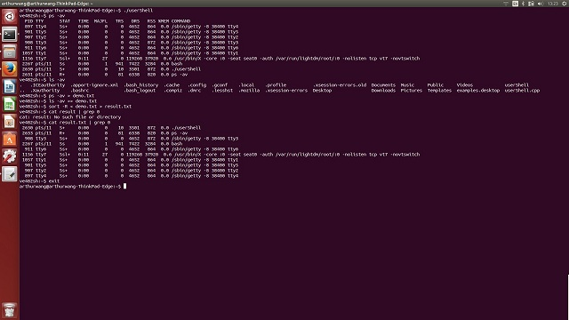
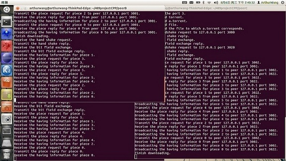
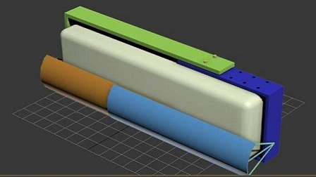
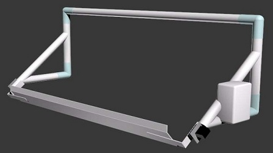

OS X EI Capitan Micro Benchmarking
Description
This project is the course project for CSE221. The purpose of this project is to measure the performance for a machine with the given hardware. It is also meaningful to analyze how this performance affects the software services. To achieve these two goals, we used the C programming language to implement a series of experiments. The compiler version is GCC 4.2.1 nearly without any optimization settings (compiled with “-O0”). The only optimization is to unroll all the loops by compiling with “-funroll-all-loops”. When performing all the experiments, we turned off the hardware multithreading and limited the number of active processor cores to one. We also gave the highest priority when running our program. This can be obtained by typing “sudo nice -20 ./prog” in the terminal, when we were running the program “prog”.

Member
Qian Wang, Junxia Zhuge & Xiangyu Wang
Final Report
Eye: Color-Blind Friendly Chrome Extension
Description
According to the references, there are nearly 6% people suffering from color-blindness nowadays. What's more, it is obvious that teenagers in an increasing number are getting near-sighted. The health of eyes is becoming a more and more serious issue in our daily lives. However, the design of many websites is not completely friendly to these people. Our main purpose is to further improve their browsing experience. Meanwhile, the users can also raise their consciousness of caring the color-blindness and preventing the near-sight by trying directly through our project.

Member
Qian Wang, Danyang Zhang, Zhenchao Gan & Junxia Zhuge
Chrome Extension
2D Quad-Mesh Generation for Ship Assembly
Description
The assembly of ship blocks is achieved through welding. To get a high level of closure accuracy, finite element analysis (FEA) is always needed to predict the welding deformation. However, the fast automatic mesh generation technique during the finite element method (FEM) for the ship assembly is not mature enough yet. Due to the complex ship architecture, during FEA, the model must be built up manually in most cases. This process is complicated and the errors are easy to occur. Consequently, the efficiency of FEA during the ship assembly is highly affected. Automatic mesh generation is a key factor restricting the development of FEM, since the quality and speed of the mesh generation directly influence the accuracy of calculation and the efficiency of analysis. In the field of marine engineering and aerospace engineering, the mesh elements are required to be quadrilateral. However, the technique of the quadrilateral mesh generation is still more difficult and less mature than that of the triangular mesh generation. This work proposed a hybrid mesh generation algorithm, borrowing the advantages from both the quad-morphing algorithm and the paving algorithm as well as considering the factor of multi-constraints. An example case is also given to illustrate the result of this proposed algorithm.

Member
Qian Wang, Jinsong Bao, Chao Xun, Yijun Pan & Junjie Tang
White-Box SMS4 Algorithm Investigation and Realization
Description
This is a project for the 21th Participation in Research Program of Shanghai Jiao Tong University.
During the recent years, problems about information security have already been placed great and broad emphasis on. Under the white-box attack context, the important information in traditional cryptographic algorithms, secret key, will not be protected any more. The reason is that the secret key can be easily acquired by the attackers under their observation. Therefore, it is necessary for us to hide the information about the secret key into the executing process of the cryptographic algorithms. This is the significant meaning of the white-box cryptographic algorithms.
We studied an existing white-box cryptographic algorithm proposed by Chow and analyzed its advantage and disadvantage, so that we can conclude the necessity of a safe white-box cryptographic algorithm. Meanwhile, we also briefly studied a traditional SMS4 algorithm and white-box SMS4 algorithm. The findings of this Participation in Research Program is an implement of a new SMS4 white-box improved algorithm.

Member
Qian Wang, Yuming Hua, Yue Yin, Jiaqi Xu & Xiaolei Zhen
Demonstration Program
Head Wearing Eye-Tracking Camera (Major Design Capstone Project)
Description
This is a major design capstone project for my undergraduate study.
Photographing is important but not always convenient in people's life. There are many situations that photographing is limited or cannot function as people want, even if people wear head-fixing cameras. In order to address these problems, we designed and manufactured a head wearing eye-tracking camera system. This camera can track the real-time motion of people's eyes and photograph the direction they are looking at. We expect the system can provide a platform for further applications such as social networks, navigation systems, and virtual reality.
By brainstorming, we generated several concepts and specified one, and based on the concept diagram we designed the system. For hardware, the system is divided into on-head part and off-head part. The on-head part includes a helmet, servo combinations, an eye-tracking mini camera, and a cellphone as the main camera. The off-head part is a box containing two batteries, the central controller and the servo driver board. For software, we programmed one application on cellphone to take pictures, and three modules in Raspberry Pi: eye images taking module, eye-tracking module and servo control module. A top module is set in Raspberry Pi to call the submodules.

Member
Qian Wang, Kenneth Choi, Canchao Duan, Yanrong Li & Liyu Wang
Final Report
Simplified User Shell Implementation (Course Project for VE482)
Description
This is a course project for Introduction to Operating System.
The goal of this exercise is to implement a user shell that provides most functionalities present in common shells. The shell should run under Linux. The main task of a shell is to wait for some user input, parse it and execute a command requested by the user. Your shell should also provide support for input/output redirection and pipelining from a program into another one. When waiting the shell displays a prompt, here we want our shell to display "ve482sh:~$ ". When a command is input by the user it should be launched in a new process and the shell should block while waiting for the command to end.

Member
Qian Wang
Source code
Peer-to-Peer Communication for File Sharing (Course Project for VE489)
Description
This is a course project for Computer Communication Network.
In this project, we implement the basic BitTorrent protocol, a peer-to-peer file sharing protocol, designed to facilitate file transfers among multiple peers across unreliable networks and distributed large amounts of data over the Internet. We coded the protocol by socket programming and multi-thread programming. After that, we tested the effectiveness on Ubuntu 12.04 for different public network topologies. More features can be added to our design in the future as well. For example, we may add some common functions, such as resuming broken downloads or providing security.

Member
Qian Wang, Yanrong Li, Liyu Wang & Aimin Tang
PIC32 Based Multifunctional Electronic Piano (Course Project for VE373)
Description
This is a course project for Microprocessor Based System Design.
In this project, we present an updated version of musical instrument. We wish this electronic piano may help a potential musician to make better progress. The basic function that this piano provides is, of course, broadcasting sounds. Besides, it also has the feature of LED spetrum displaying and music score checking. The whole system is based on two PIC32MX795F512L microcontrollers, a filtering and amplifying circuit and other mechanic components. This project is more than an embedded system design. It also integrated knowledge about circuit design, mechanical structure design, signal processing and communication.

Member
Qian Wang, Yanrong Li & Liyu Wang
Final Report
Pipelined Processor Modeling(Course Project for VE370)
Description
This is a course project for Introduction to Computer Organization.
In this project, we pratice building a single-cycle CPU and pipelined CPU which can implement a basic subset of MIPS instruction including "add", "sub", "and", "or", "addi", "beq", "slt", "lw", "sw" and "j" in Verilog HDL. We not only simulated the process with Xilinx ISE Design Suite, but also present the result on an FPGA board. We use four SSDs, six switches and eight LED lights on the FPGA board to show any of the values stored in the register file at any time. We build a top module, and set the CPU module and the display module as two separate sub-modules.

Member
Qian Wang, Canchao Duan & Yanrong Li
Final Report
Air Conditioner Wind Direction Adjuster (Course Project for VG100)
Description
This is a course project for Introduction to Engineering.
Students at the UM-SJTU Joint Institute (JI) dorms face problems that the air conditioner may blow directly on students and do harm to their health. In other cases, air conditioner blade is broken or the remote control of the air conditioner is missing. In order to solve these problems, our team designed an air conditioner wind direction adjuster which enables students to adjust wind direction simply with hand gesture.
To operate our design, the user firstly wave left and right to activate the servo. Meanwhile the user should keep his hand still and continue activating one of the two sensors. The wind deflector of our design, which is attached to outer frame, will then turn until the user lift his hand when it turns to the desired direction. The wind deflector has a default turning angle range so that it will turn back and forth until the user stopped it. All the inputs and outputs of our design are processed and controlled by the Arduino board.
 
Member
Qian Wang, Guobin Liu, Hanlin Shi, Jiashi Yu & Wennan Zhou